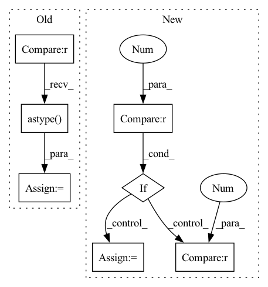

Pattern ID :26438

Before Change
b_percentile = np.percentile(b_copy, percentile)
new_w_mask = torch.Tensor((w_copy >= w_percentile).astype(int))
new_b_mask = torch.Tensor((b_copy >= b_percentile).astype(int))
self.w_mask = new_w_mask
self.b_mask = new_b_mask
After Change
new_b_mask = np.zeros_like(b_copy)
for task_num in range(self.num_tasks):
if task_num != 0:
for prev_idx in range(task_num - 1):
w_copy[task_num][new_w_mask[prev_idx] == 1] = 0
b_copy[task_num][new_b_mask[prev_idx] == 1] = 0
w_percentile = np.percentile(w_copy[task_num], percentile)
b_percentile = np.percentile(b_copy[task_num], percentile)
In pattern: SUPERPATTERN
Frequency: 4
Non-data size: 7
Instances
Fragment ID: 79282361
Project Name: beyond-ml-labs/beyondml
Commit Name: 03dd7b87e47d75ba5a7317f31e1ff50b340898a7
Time: 2022-06-02
Author: 77127228+jacobrenn@users.noreply.github.com
File Name: mann/burning/layers/MultiMaskedConv2D.py
M Class Name: MultiMaskedConv2D
N Class Name: MultiMaskedConv2D
M Method Name: prune(2)
N Method Name: prune(2)
M Parent Class: torch.nn.Module
N Parent Class: torch.nn.Module
M File Name: mann/burning/layers/MultiMaskedConv2D.py
N File Name: mann/burning/layers/MultiMaskedConv2D.py
M Start Line: 98
M End Line: 107
N Start Line: 85
N End Line: 103
'>
Before Change
//------------------------------------------------//
seg_img = np.zeros((np.shape(pr)[0], np.shape(pr)[1], 3))
for c in range(self.num_classes):
seg_img[:,:,0] += ((pr[:,: ] == c )*( self.colors[c][0] )).astype("uint8")
seg_img[:,:,1] += ((pr[:,: ] == c )*( self.colors[c][1] )).astype("uint8")
seg_img[:,:,2] += ((pr[:,: ] == c )*( self.colors[c][2] )).astype("uint8")
After Change
//------------------------------------------------//
image = Image.blend(old_img, image, 0.7)
elif self.mix_type == 1:
// seg_img = np.zeros((np.shape(pr)[0], np.shape(pr)[1], 3))
// for c in range(self.num_classes):
// seg_img[:, :, 0] += ((pr[:, :] == c ) * self.colors[c][0]).astype("uint8")
// seg_img[:, :, 1] += ((pr[:, :] == c ) * self.colors[c][1]).astype("uint8")
// seg_img[:, :, 2] += ((pr[:, :] == c ) * self.colors[c][2]).astype("uint8")
seg_img = np.reshape(np.array(self.colors, np.uint8)[np.reshape(pr, [-1])], [orininal_h, orininal_w, -1])
//------------------------------------------------//
// 将新图片转换成Image的形式
//------------------------------------------------//
image = Image.fromarray(np.uint8(seg_img))
elif self.mix_type == 2:
seg_img = (np.expand_dims(pr != 0, -1) * np.array(old_img, np.float32)).astype("uint8")
//------------------------------------------------//
// 将新图片转换成Image的形式
'>
Fragment ID: 79282362
Project Name: bubbliiiing/pspnet-pytorch
Commit Name: 373340e315d6e9a029041ec293673c06c3c1cb7e
Time: 2022-03-04
Author: 3323290568@qq.com
File Name: pspnet.py
M Class Name: PSPNet
N Class Name: PSPNet
M Method Name: detect_image(2)
N Method Name: detect_image(2)
M Parent Class: object
N Parent Class: object
M File Name: pspnet.py
N File Name: pspnet.py
M Start Line: 155
M End Line: 172
N Start Line: 115
N End Line: 190
'>
Before Change
for c in range(self.num_classes):
seg_img[:,:,0] += ((pr[:,: ] == c )*( self.colors[c][0] )).astype("uint8")
seg_img[:,:,1] += ((pr[:,: ] == c )*( self.colors[c][1] )).astype("uint8")
seg_img[:,:,2] += ((pr[:,: ] == c )*( self.colors[c][2] )).astype("uint8")
//------------------------------------------------//
// 将新图片转换成Image的形式
//------------------------------------------------//
After Change
//------------------------------------------------//
image = Image.blend(old_img, image, 0.7)
elif self.mix_type == 1:
// seg_img = np.zeros((np.shape(pr)[0], np.shape(pr)[1], 3))
// for c in range(self.num_classes):
// seg_img[:, :, 0] += ((pr[:, :] == c ) * self.colors[c][0]).astype("uint8")
// seg_img[:, :, 1] += ((pr[:, :] == c ) * self.colors[c][1]).astype("uint8")
// seg_img[:, :, 2] += ((pr[:, :] == c ) * self.colors[c][2]).astype("uint8")
seg_img = np.reshape(np.array(self.colors, np.uint8)[np.reshape(pr, [-1])], [orininal_h, orininal_w, -1])
//------------------------------------------------//
// 将新图片转换成Image的形式
//------------------------------------------------//
image = Image.fromarray(np.uint8(seg_img))
elif self.mix_type == 2:
seg_img = (np.expand_dims(pr != 0, -1) * np.array(old_img, np.float32)).astype("uint8")
//------------------------------------------------//
// 将新图片转换成Image的形式
'>
Fragment ID: 79282367
Project Name: bubbliiiing/hrnet-pytorch
Commit Name: e53724ea45003d8acd5d8b5465fa97038d486824
Time: 2022-03-19
Author: 3323290568@qq.com
File Name: hrnet.py
M Class Name: HRnet_Segmentation
N Class Name: HRnet_Segmentation
M Method Name: detect_image(2)
N Method Name: detect_image(2)
M Parent Class: object
N Parent Class: object
M File Name: hrnet.py
N File Name: hrnet.py
M Start Line: 153
M End Line: 170
N Start Line: 113
N End Line: 188
'>
Before Change
w_percentile = np.percentile(w_copy, percentile)
b_percentile = np.percentile(b_copy, percentile)
new_w_mask = torch.Tensor((w_copy >= w_percentile).astype(int))
new_b_mask = torch.Tensor((b_copy >= b_percentile).astype(int))
self.w_mask = new_w_mask
self.b_mask = new_b_mask
After Change
new_b_mask = np.zeros_like(b_copy)
for task_num in range(self.num_tasks):
if task_num != 0:
for prev_idx in range(task_num - 1):
w_copy[task_num][new_w_mask[prev_idx] == 1] = 0
b_copy[task_num][new_b_mask[prev_idx] == 1] = 0
w_percentile = np.percentile(w_copy[task_num], percentile)
'>
Fragment ID: 79282339
Project Name: beyond-ml-labs/beyondml
Commit Name: 03dd7b87e47d75ba5a7317f31e1ff50b340898a7
Time: 2022-06-02
Author: 77127228+jacobrenn@users.noreply.github.com
File Name: mann/burning/layers/MultiMaskedDense.py
M Class Name: MultiMaskedDense
N Class Name: MultiMaskedDense
M Method Name: prune(2)
N Method Name: prune(2)
M Parent Class: torch.nn.Module
N Parent Class: torch.nn.Module
M File Name: mann/burning/layers/MultiMaskedDense.py
N File Name: mann/burning/layers/MultiMaskedDense.py
M Start Line: 43
M End Line: 52
N Start Line: 40
N End Line: 58